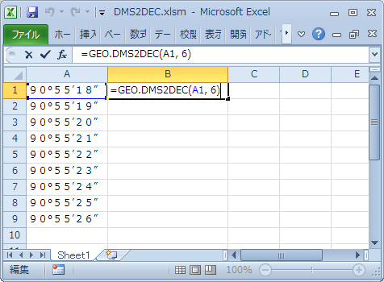

DMS2DEC (Excel user defined function)
DMS2DEC is a VBA function to convert DMS degree into decimal degree on Excel sheets.
How to use
1. Import "GEO.bas" into your Excel file.
2. Enter formula on sheets as below.

=GEO.DMS2DEC(address, digits)
- address
- Required. Cell address on the sheet.
- digits
- Required. Number of digits after decial point. Digits must be greater than or equal to 0.
Attribute VB_Name = "GEO"
Function DMS2DEC(r As Range, p As Integer)
t = r.Text
Set regex = CreateObject("VBscript.RegExp")
regex.Global = True
regex.IgnoreCase = True
regex.Pattern = "\s"
t = regex.Replace(t, "")
t = Replace(t, "０", "0")
t = Replace(t, "１", "1")
t = Replace(t, "２", "2")
t = Replace(t, "３", "3")
t = Replace(t, "４", "4")
t = Replace(t, "５", "5")
t = Replace(t, "６", "6")
t = Replace(t, "７", "7")
t = Replace(t, "８", "8")
t = Replace(t, "９", "9")
regex.Pattern = "\u2010|\u2011|\u2012|\u2013|\u2014|\u2015|\u2043|\u2212|\u2500|\u2501|\u30FC|\u3127|\u3161|\u4E00|\uFE63|\uFF0D|\uFF70"
t = regex.Replace(t, "-")
' regex.Pattern = "\u00B0|\u00BA|\u02DA|\u030A|\u2070|\u2218|\u309A|\u309C|\uFF9F"
' t = regex.Replace(t, "°")
'
' regex.Pattern = "\u2032|\u0027|\u02B9|\u02BC|\u02C8|\u0301|\u2018|\u2019|\u201B|\u2035|\u05F3|\uA78C|\uFF07|\uFF40|\u301D|\u301E|\u3099|\u309B"
' t = regex.Replace(t, "′")
'
' regex.Pattern = "\u2033|\u0022|\u201C|\u201D|\u201F|\u2036|\u05F4|\u02BA|\u030B|\u030E|\u3003|\uFF02|\uFF9E"
' t = regex.Replace(t, "″")
'
' regex.Pattern = "^(\-?\d+)(?:\°|[^0-9])(?:(\d+)(?:\′|[^0-9])(?:(\d+)(?:\″|[^0-9])?)?)?$"
regex.Pattern = "^(\-?\d+)[^0-9](?:(\d+)[^0-9](?:(\d+)[^0-9]?)?)?$"
Set a = regex.Execute(t)
d = CInt(a(0).Submatches(0))
m = CInt(a(0).Submatches(1)) / 60
s = CInt(a(0).Submatches(2)) / 3600
If Not IsNumeric(p) Then
p = 6
End If
DMS2DEC = Fix((d + m + s) * (10 ^ p)) / (10 ^ p)
End Function